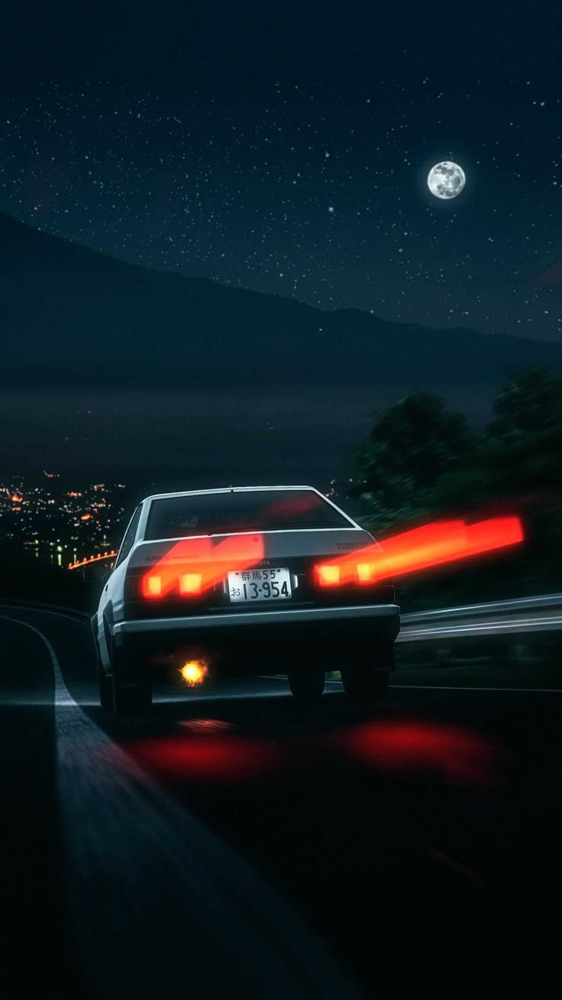

Welcome to the World of Initial D
Step into the world of Initial D, a beloved series that combines the thrill of street racing with compelling characters and unforgettable moments. Whether you're a car enthusiast or just love a good story, Initial D offers something special for everyone.
What is Initial D?
Initial D is a popular Japanese manga and anime series created by Shuichi Shigeno. The story centers around Takumi Fujiwara, a young man who unknowingly becomes a skilled street racer. What starts as a simple job delivering tofu for his father's shop leads Takumi into the underground world of mountain pass racing, where he discovers his true talent for drifting and becomes involved in exciting, competitive races.
The Story of Takumi Fujiwara
Takumi Fujiwara lives a simple life, delivering tofu for his father’s shop every morning before school. Unbeknownst to him, these early morning trips on mountain roads have shaped him into a natural-born driver with remarkable drifting skills. When Takumi gets involved with the underground street racing scene, his ability behind the wheel quickly catches the attention of seasoned racers, propelling him into a world of fierce competition. The series focuses not just on races but also on the relationships and rivalries that develop along the way, highlighting themes of growth, friendship, and the thrill of the race.
Key Features of Initial D
- Iconic Cars: The series features a range of legendary cars, including Takumi’s famous Toyota AE86, the Nissan Skyline GT-R, and the Mazda RX-7. Each car plays a vital role in the story and the races, symbolizing the personalities of the characters behind the wheels.
- The Art of Drifting: Drifting is one of the key elements of Initial D. The technique, which involves controlling a car while it slides sideways around a corner, is showcased in a variety of intense races throughout the series. It's a skill that requires precision and mastery, and Takumi becomes a drifting prodigy over time.
- Engaging Characters: From the determined Takumi to his rival Keisuke, and the strategic Ryosuke, each character has a unique story and motivation. These relationships are woven into the race scenes, adding layers of depth to the high-speed action.